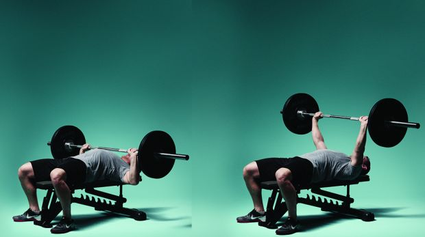

Жим лежа
Техника выполнения:
 чтобы принять исходное положение, лягте на скамью, поставьте ноги на пол и удерживайте штангу на вытянутых руках на уровне груди. Прижмите плечи к скамье, напрягите ягодицы, согните руки и опустите штангу к груди, а затем поднимите обратно.Целевые мышцы:
грудь, трицепс, передние дельтыОдновременное включение в работу мышц груди, плеч и трицепсов делает это базовое упражнение, наряду со становой тягой и приседаниями, одним из лучших испытаний на силу. На трицепс здесь можно дать гораздо больше нагрузки, чем в отжиманиях на брусьях или разгибании рук в кроссовере
Жим лежа также задействует мышцы верхней части спины. Следите за тем, чтобы лопатки оставались неподвижными и были прижаты к скамье. Такое напряжение будет держать вас в устойчивом положении при работе с большими весами. Именно для укрепления такого положения иногда пауэрлифтеры даже приподнимают от скамьи бедра, чтобы еще сильнее вдавить в нее лопатки.
Устраняйте мышечный дисбаланс
Если у вас сильные мышцы груди, но слабые стабилизаторы плеча, то вам будет сложно поднять большой вес в жим лежа. В такой ситуации отличным вариантом для вас станет жим гантели одной рукой, поскольку это упражнение требует большого контроля в плечевом суставе, а также сильного кора, чтобы сбалансировать вес. Если у вас есть дисбаланс в развитии мускулатуры, то посвящайте его устранению 1 день в неделю, и тогда он довольно быстро останется в прошлом.
Дополнительные упражнения
Лучшими дополнительными к жиму лежа упражнениями являются отжимания на брусьях или жимы узким хватом, которые прорабатывают те же мышцы, но под другом углом. Как только вы можете выполнить 10 повторений с весом собственного тела без нарушения техники, начинайте добавлять отягощение на пояс или удерживайте гантель между ног.